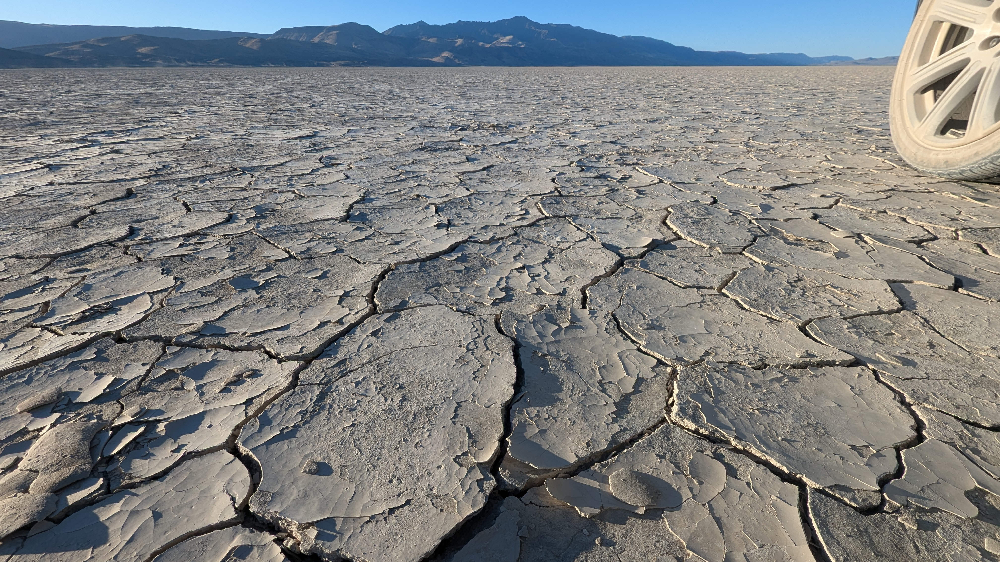
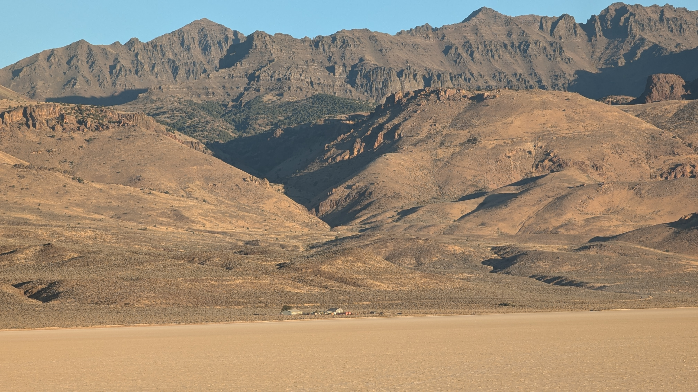
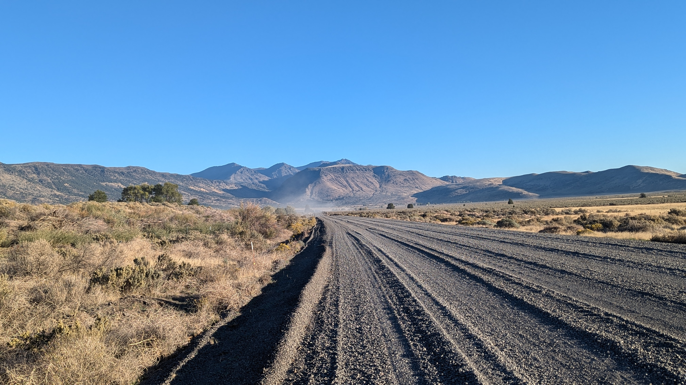
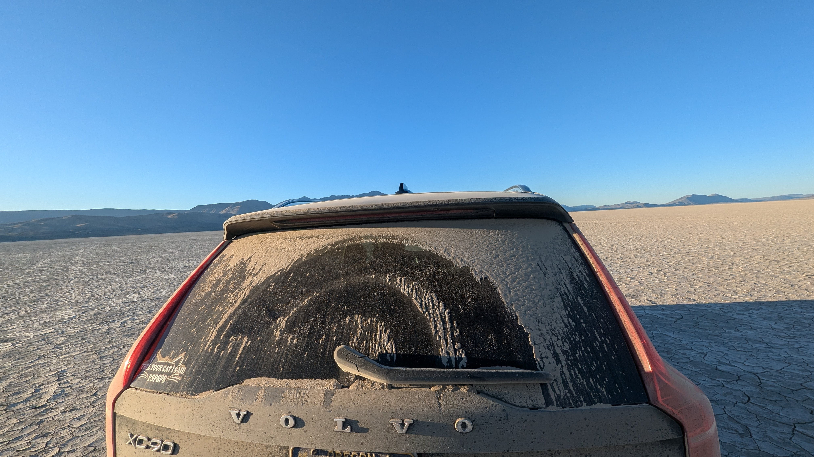
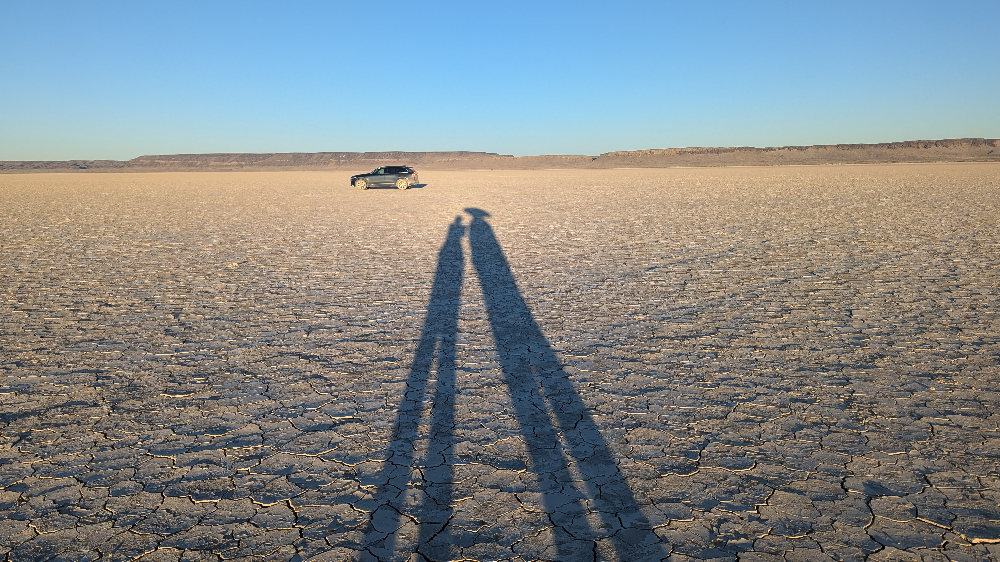
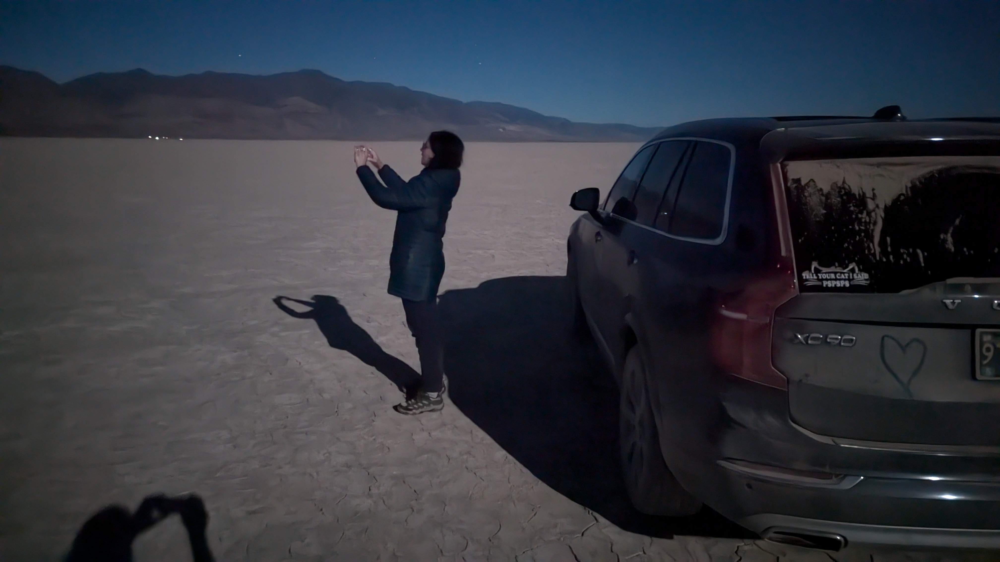
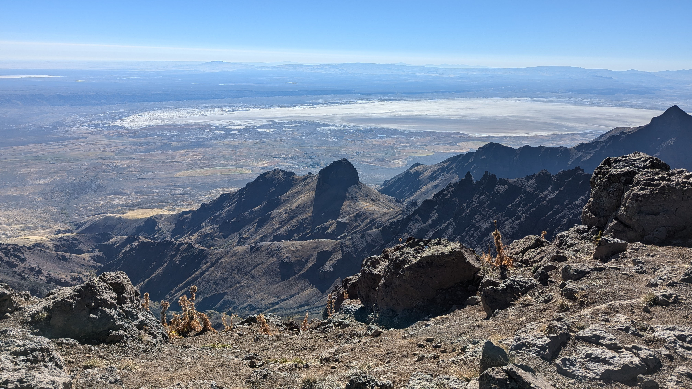
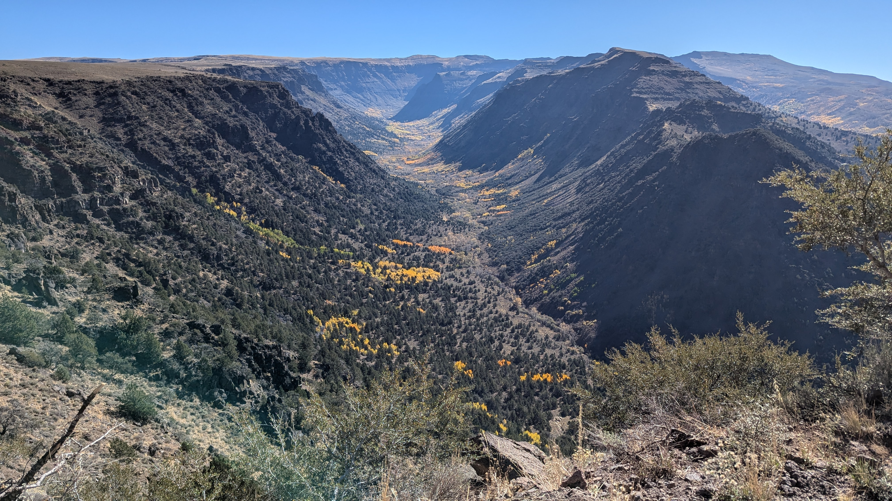
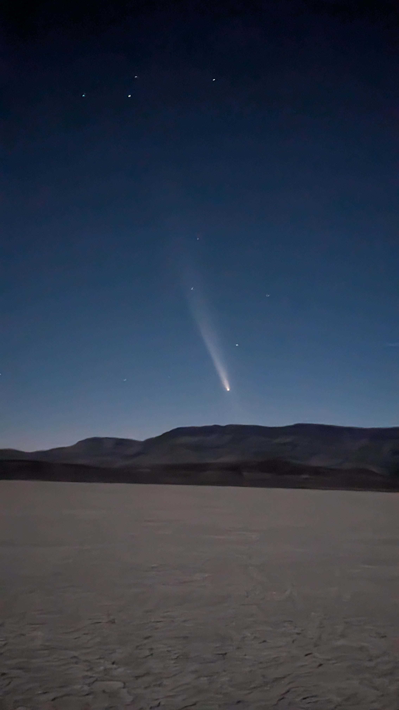

2025.05.22 :: viaggio
The Alvord Desert is a (usually) dry lake bed in Southeastern Oregon. Think a much smaller Great Salt Lake without the salt...or the permanent partial lake...but with the land speed record attempts. Maybe it's more like the Black Rock Desert? Only much smaller (about 7 miles by 12 miles)...and less Burning Man-y.

View from the playa. The Steens Mountains in the background are miles and miles and miles away and rise up over a mile-and-a-half above the playa floor.

Seeing the twee homestead near the edge of the Alvord helps to illustrate the immensity of the Steens over the Alvord.

The major road to the Alvord from the north is about 40 miles of loose, deep gravel.
Driving on the playa is nifty.

The 40+ mile gravel road and playa driving leaves your ride a tad dirty.

There was very little wind on the playa, which is rare (the Alvord is a hotspot for land sailing). We could see the dust from our drive hanging in the air thirty minutes after we parked.

A fun game to play? See how long your shadow stretches before the sun sets behind the mountains and night comes to the playa.

Another fun game to play? Try to sleep in moonlight. When night comes to the playa and the moon is waxing gibbous there's still lots of light and shadows. Yes, this photo was taken at night. The moon was so bright we took a bit of a nap and set our alarms for moonset (3:27am that day) so we could view the cosmos with as little light pollution as possible.
When we left the playa we drove down to Fields Station (about twentry miles further south on the same gravel road) to gas up and grab breakfast before heading over to the west side of the Steens to do the Steens Loop Tour. Here we found the East Rim Viewpoint and some pretty groovy canyons.

East Rim Outlook - Steens.
Steens overlooking the Playa and a fair amount of planet earth.

Groovy box canyon. "Hey?" "Yeah?" "You ever wonder why we're here?"
We also had a nice surprise on the trip just after sunset when we stayed overnight on the playa:

Comet C/2023 A3 Tsuchinshan-ATLAS, looking all celestial and amazing, comes around once every 80,000 years.